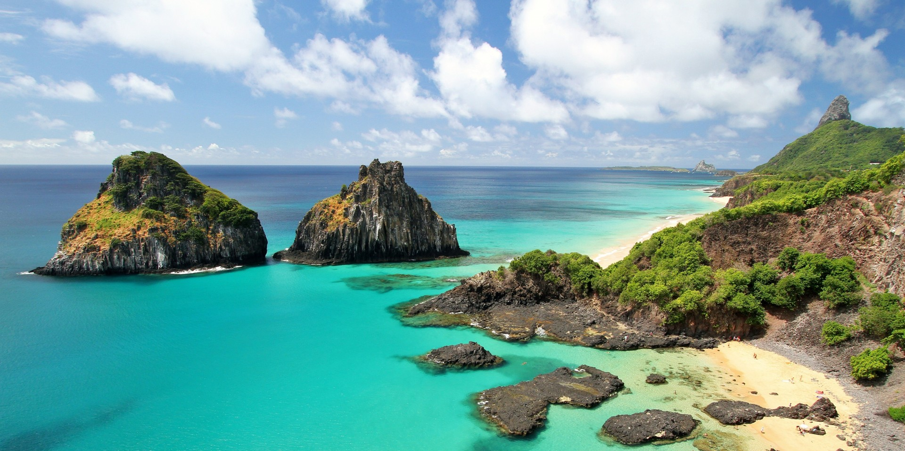

1. O oceano só é azul por conta do céu
Uma das características dos oceanos são as águas azuis, a cor é o resultado do comprimento das ondas de cor vermelha e laranja do sol, sendo absorvidos pela superfície e o comprimento de ondas de cor azuis penetrando mais profundamente, dando lugar a uma tonalidade azul. E porque esses comprimentos de onda podem viajar mais para baixo, o oceano tenderá a parecer mais azul quanto mais baixo você for. Por que a água em um copo não é azul quando você está sentado ao ar livre? Não existem moléculas suficientes para absorver a luz.
2. OS OCEANOS MANTÊM A INTERNET ONLINE
Se você pudesse avistar os quilômetros de cabos cruzando os oceanos do mundo, pareceria uma teia gigante submersa. As empresas de comunicação mantêm conexões internacionais, passando por superfícies planas no fundo do oceano. Alguns exigem camadas à prova de tubarões para evitar que predadores mordam e caia sua conexão com sites em outras partes do mundo. De acordo com o site TeleGeography.com, no início de 2018, eram aproximadamente 448 cabos submarinos em serviço em todo o mundo.
3. A PARTE MAIS PROFUNDA DO OCEANO É MUITO, MUITO PROFUNDA
A Fossa das Marianas é considerada a parte mais profunda dos oceanos do mundo – e o ponto mais profundo da Terra. Dentro da trincheira está um vale conhecido como Challenger Deep que se estende por cerca de 10.994 metros abaixo da superfície. Para efeito de comparação, todo o Monte Everest, a montanha mais alta do mundo com 8.848 metros, caberia facilmente lá. Até recentemente, as explorações tripuladas não tinham ido mais longe do que 10.910 metros abaixo da superfície, um recorde estabelecido por dois oceanógrafos em 1960. Em 2012, o cineasta James Cameron explorou aproximadamente as mesmas profundezas em uma missão em que foi sozinho . Em 2019, Victor Vescovo fez história ao ser a primeira pessoa a chegar ao fundo do oceano.
4. OS SONS PODEM VIAJAR PARA AS ÁREAS MAIS PROFUNDAS DO OCEANO
Certa vez, os pesquisadores baixaram um microfone subaquático chamado hidrofone até quase o fundo da Fossa das Marianas para ver quais sons – se houver – ele poderia captar. Felizmente, a imensa pressão nessas profundidades – cerca de 11 toneladas por metro quadrado – não implodiu o equipamento, permitindo que os cientistas descobrissem o som de terremotos, baleias de barbatanas passando e outros ruídos ambientais eram audíveis.
5. EXISTEM LAGOS E RIOS ABAIXO DA SUPERFÍCIE DO OCEANO
Algumas superfícies no oceano apresentam visões que não parecem fazer nenhum sentido lógico – rios e lagos, alguns deles com quilômetros de extensão, podem se estender pelo solo mesmo estando submersos. Como pode uma massa de água existir em uma massa de água? A água do fundo do mar infiltra-se e dissolve as camadas de sal, formando depressões. Como a água na depressão é mais densa do que a água ao seu redor, ela se acomoda na depressão e forma uma piscina distinta.
6. EXISTEM 20 MILHÕES DE TONELADAS DE OURO INTOCÁVEL NO OCEANO
Se você espera encontrar uma fortuna na prospecção de ouro, não espere que o oceano coopere. Você pode saquear um naufrágio, mas não será capaz de coletar muito dos 20 milhões de toneladas de ouro que se estima existirem na água. Isso porque é tão diluído que é medido em partes por trilhão. Um litro de água do mar pode render 13 bilionésimos de grama.
7. A MAIOR CACHOEIRA DA TERRA ESTÁ NO OCEANO ATLÂNTICO
O Estreito da Dinamarca , uma cachoeira abaixo do Oceano Atlântico, é o equivalente a 2.000 das cachoeiras mais notáveis do mundo, com um líquido em cascata caindo 3.500 metros. A água fria do estreito no lado oriental é mais densa do que o fluido quente vindo do oeste. Quando as duas águas se misturam, a mais frio afunda, criando uma cachoeira.
8. SABEMOS MUITO POUCO SOBRE A MAIOR PARTE DA VIDA MARINHA DO OCEANO
O tamanho e a pressão da água conspiram para limitar nossa exploração dos oceanos, tanto que estimamos que identificamos apenas um terço da vida marinha que pode viver no fundo do mar. É possível que a maioria deles sejam organismos menores, mas é provável que algumas baleias e outras espécies de mamíferos ainda não tenham sido descobertas. No entanto, estamos progredindo: uma média de 2.000 novas espécies são descobertas a cada ano!
9. O LUGAR MAIS REMOTO DA TERRA É O SUL DO PACÍFICO
Conhecida como Point Nemo, a área fica a cerca de 1.609 kilometros de distância da costa de três ilhas vizinhas. É tão remoto que os astronautas costumam estar mais perto de qualquer pessoa andando pelo planeta Terra.
10. O OCEANO NOS MANTÉM RESPIRANDO
Esqueça toda a beleza e maravilha dos oceanos do mundo: no mínimo, eles são responsáveis por nos fornecer oxigênio. Os oceanos produzem 70 por cento do suprimento de oxigênio na atmosfera, graças às plantas marinhas que o liberam como um subproduto da fotossíntese. Estima-se que um fitoplâncton, Prochlorococcus , seja o único responsável por uma em cada cinco respirações que um ser humano fará.
11. Ponto nemo
O Ponto Nemo, é um Ponto de Inacessibilidade do Pacífico Sul, é o local mais remoto da Terra, situado no Oceano Pacífico Sul, a cerca de 2.886 quilômetros de qualquer terra firme. Ele é destino de centenas de satélites e naves espaciais aposentadas, sendo conhecido como “cemitério de espaçonaves”.
Melhores praias do Brasil
Baía do Sancho, Fernando de Noronha (PE)
A praia mais “queridinha” de Fernando de Noronha é a escolha de muitos turistas para os rankings de melhores praias do Brasil, ela conta com uma faixa de areia clara e águas cristalinas de diferentes tonalidades, é um local excelente para o mergulho livre, porque possui ótima visibilidade dos bancos de corais e da vida marinha,, além de belíssimas falésias cobertas por vegetação. Quem quer visitar a baía do Sancho pode ir tanto de barco quanto por conta própria, aproveitando a paisagem com mais calma.

Praia do Forno, Arraial do Cabo (RJ)
Com quase 500 metros de extensão, você encontrará diversos atrativos no local e para quem prefere mergulho, é uma ótima opção, porque é possível praticar snorkelling e avistar tartarugas, fazendas de ostras e várias formas de vida marinha. Para chegar até lá, é preciso pegar uma trilha no fim da Praia dos Anjos que dura cerca de 20 minutos a pé ou contratar um passeio que parte também da Praia dos Anjos de barco.
/i.s3.glbimg.com/v1/AUTH_59edd422c0c84a879bd37670ae4f538a/internal_photos/bs/2019/Z/R/AlFYLeSzW0zqTWh6AGdQ/nota1.4.jpg)
Praia do Patacho, São Miguel dos Milagres (AL)
A Praia do Patacho disputa com Lage como as melhores do município de Porto de Pedras, em Alagoas. Ambas contam com areias e águas claras e coqueiros que emolduram a paisagem. Praticamente desertas, elas são ideais para os turistas que querem relaxar e apreciar a natureza. A grande vantagem de Patacho é que, quando a maré baixa, ela ganha algumas lindas piscinas naturais. Além disso, conta com vários outros pontos positivos, como a localização privilegiada e de fácil acesso, a baixa quantidade de turistas e, claro, a beleza estonteante.
/i.s3.glbimg.com/v1/AUTH_59edd422c0c84a879bd37670ae4f538a/internal_photos/bs/2022/B/e/h7BFCSSIiDIPZfTsxyFw/praia-do-patacho-lucas-meneses.jpg)
Praia de Antunes, Maragogi (AL)
É a atração mais disputada de Maragogi, em Alagoas, por conta da tranquilidade. Na época de maré baixa tem piscinas naturais cheias de peixinhos coloridos. As águas cristalinas ficam na altura dos joelhos e o mar é calmo, o que permite nadar com crianças e também fazer passeios de vela, de caiaque ou de buggy pelas areias. Fica Localizada a 7 km do centro da cidade e você pode acessar a Praia de Antunes de carro e cruzando uma propriedade privada aberta a passagem, de lancha, de barco, de buggy ou com uma das vans que partem de Maragogi com destino a Peroba (solicite a parada na Praia de Antunes).

Praia dos Carneiros, Tamandaré (PE)
Essa é considerada uma das praias mais bonitas do litoral pernambucano com 5 km de extensão, ela é toda margeada por coqueiros, oferece uma água morninha e uma paisagem impressionante, moldada pelo estuário do rio Formoso e por um paredão de arrecifes. Ela oferece aos turistas a possibilidade de se banharem nas piscinas naturais ou de apreciarem a vista em um dos bancos de areia.